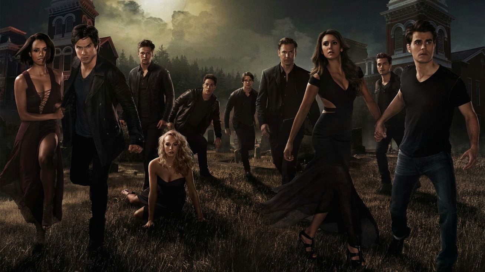

O que é The Vampire Diaries?
É uma série de drama sobrenatural criada por Kevin Williamson e Julie Plec, baseada nos livros de L.J. Smith. A série estreou em 2009 e acompanha a vida da jovem Elena Gilbert, que se vê envolvida em um triângulo amoroso com dois irmãos vampiros: Stefan e Damon Salvatore.

Temporadas e Desenvolvimento
A série possui 8 temporadas e combina romance, ação, mistério e elementos sobrenaturais. Cada temporada traz novos vilões, tramas emocionantes e evoluções nos personagens principais.
- Temporada 1: O início da história e o triângulo amoroso.
- Temporada 2: Maldições, lobisomens e sacrifícios.
- Temporadas 3 a 5: Originais, viagens no tempo e doppelgängers.
- Temporadas finais: A luta contra o mal absoluto e despedidas marcantes.
Personagens Principais
A série é conhecida por seu elenco marcante. Veja alguns dos personagens principais:
- Elena Gilbert – A protagonista humana (e depois vampira) da série.
- Stefan Salvatore – Vampiro sensível e protetor.
- Damon Salvatore – O irmão rebelde e sarcástico.
- Bonnie Bennett – Melhor amiga bruxa de Elena.
- Caroline Forbes – De popular humana a poderosa vampira.
- Klaus Mikaelson – Híbrido original e vilão carismático.
Curiosidades da Série
Fatos interessantes sobre *The Vampire Diaries*:
- O casal "Delena":
- Damon e Elena conquistaram milhares de fãs e foram um dos casais mais marcantes da TV.
- Spin-offs:
- A série originou *The Originals* e *Legacies*, com foco em outros personagens e novas gerações.
- Locações:
- A cidade fictícia de Mystic Falls foi filmada em Covington, Geórgia, nos EUA, que hoje é ponto turístico para fãs.